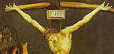

Swoon hypothesis
| Part of a series on |
| Death and Resurrection of Jesus |
|---|
|  |
| Portals: |
{kind=link}
{kind=link}
The swoon hypothesis is any of a number of ideas that aim to explain the resurrection of Jesus, proposing that Jesus did not die on the cross, but merely fell unconscious ("swooned"), and was later revived in the tomb in the same mortal body. This 200-year-old hypothesis is still the subject of debate to this day.
Contents
[hide]18th and 19th centuries[edit]
Early proponents of this theory include German Karl Friedrich Bahrdt, who suggested in around 1780, that Jesus deliberately feigned his death, using drugs provided by the physician Luke to appear as a spiritual messiah and get Israel to abandon the idea of a political messiah. In this interpretation of the events described in the Gospels, Jesus was resuscitated by Joseph of Arimathea, with whom he shared a connection through a secret order of the Essenes — a group that appear in many of the "swoon" theories.
Around 1800, Karl Venturini proposed that a group of supporters dressed in white — who were, with Jesus, members of a "secret society" — had not expected him to survive the crucifixion, but heard groaning from inside the tomb, where Jesus had regained consciousness in the cool, damp air. They then frightened away the guards and rescued him.
A third rationalist theologian, Heinrich Paulus, wrote in works from 1802 onwards that he believed that Jesus had fallen into a temporary coma and somehow revived without help in the tomb. He was critical of the vision hypothesis and argued that the disciples must have believed that God had resurrected Jesus. Friedrich Schleiermacher endorsed a form of Paulus' theory in the early 1830s.
Mirza Ghulam Ahmad, the founder of the Ahmadiyya Muslim Movement, proposed a theory in his 1899 book Jesus in India[1] that Jesus traveled to India after surviving the crucifixion.
20th century[edit]
Michael Baigent, Richard Leigh and Henry Lincoln, in their 1982 book Holy Blood, Holy Grail, speculated that Pontius Pilate was bribed to allow Jesus to be taken down from the cross before he was dead. In 1992, Barbara Thiering explored the theory in depth in her book Jesus and the Riddle of the Dead Sea Scrolls. In 2006, Baigent published The Jesus Papers, a book that describes how Jesus may have survived the crucifixion. Other 20th-century proponents of various "swoon theories" include:
- Ernest Brougham Docker (1920, in If Jesus Did Not Die on the Cross)
- Robert Graves and Joshua Podro (1957, in Jesus in Rome)
- Hugh J. Schonfield (1965, in The Passover Plot)
- Donovan Joyce (1972, in The Jesus Scroll)
- J.D.M. Derrett (1982, in The Anastasis: The Resurrection of Jesus as an Historical Event)
- Holger Kersten (1994, in Jesus lived in India)
- Andrew Gale (2013)
- David Mirsch (2011, "The Open Tomb: Why and How Jesus Faked His Death and Resurrection")
- George Moore uses this theory in his novel "Brook Kerith"
Islamic perspective[edit]
Inadvertently, the biggest proponent of the swoon hypothesis in the modern era would likely be Muslim preacher Ahmed Deedat of South Africa, whose book Crucifixion or Cruci-fiction has been widely printed and distributed all over the Muslim World.[2] He takes a critical look at the events in the four Gospels and theorizes an alternative scenario of what really happened, a scenario very similar to the swoon hypothesis.
The official Islamic position on the subject of crucifixion, however - which is a form of Docetism - is highlighted in verse [Quran 4:155
Ahmadiyya perspective[edit]
According to the late 19th century writings of Mirza Ghulam Ahmad, the founder of the Ahmadiyya movement, the theological basis of the Ahmadi belief is that Jesus was only "in a swoon"[3] when he was taken down from the cross. Ahmad argued that when Jesus was taken down from the cross, he had lapsed into a state similar to Jonah's state of "swoon" in the belly of a fish. Mirza Ghulam Ahmad interpreted the phrase in Deuteronomy 21:23: kī qilelat Elohim taluy, "… for a hanged man is the curse of God", as suggesting that "God would never allow one of His true prophets to be brutally killed in such a degrading manner as crucifixion". Following his ordeal, Jesus was cured of his wounds with a special 'ointment of Jesus' (marham-i ʿIsā).".[4]
Supporting arguments[edit]
It was uncommon for a crucified healthy adult to die in the time described by the Gospels; the Gospel of Mark reports that Jesus was crucified at nine in the morning and died at three in the afternoon, or six hours after the crucifixion. Pilate was surprised to hear that Jesus had died so soon (Mk 15:44). The average time of suffering before death by crucifixion is stated to be about 2–4 days, and there were reported cases where the victims lived for as long as 9 days.[5] Of course the time of death by crucifixion depended on the type of crucifixion and no accounts have been found of the exact method of Jesus' crucifixion.
Further support is lent to the theory when Jesus' body in the Gospel narratives is quickly whisked away and hidden from public view. No elaborate funeral arrangements and no public viewing of the corpse are known to have taken place. The body is taken down from the cross and immediately handed over to a close disciple (Joseph of Arimathea), who transports Jesus' body to a nearby, secure burial chamber.[6]
A major problem with this interpretation is that Jewish religious law (halacha) generally forbids embalming and therefore Jews generally bury their dead as soon as possible: "Jewish burials take place as quickly as possible, following a principle of honoring the dead (k'vod hamet).[7]
Counter-arguments[edit]
Jesus' state of health[edit]
The swoon hypothesis has been criticized by many, including medical experts who, based on the account given in the New Testament, conclude that Jesus was definitively dead when removed from the cross.[8] Many others consider it unlikely that Jesus would be capable of inspiring faith in those who saw him after barely surviving a crucifixion, including the 19th century rationalist theologian David Strauss, who wrote: "It is impossible that a being who had stolen half dead out of the sepulchre, who crept about weak and ill and wanting medical treatment... could have given the disciples the impression that he was a conqueror over death and the grave, the Prince of life: an impression that lay at the bottom of their future ministry."[9]
Medical arguments[edit]
Using the work of Samuel Haughton, commentators Frederick Charles Cook and Josh McDowell argued that the death of Jesus in the Gospels could not have been fabricated, as the text displays medical knowledge not available at the time. Haughton wrote that the description in the Gospel of John of the flowing of "blood and water" after the soldier pierced Jesus' side with a spear was prescient: "... With the foregoing cases most anatomists who have devoted their attention to this subject are familiar; but the two following cases, although readily explicable on physiological principles, are not recorded in the books (except by St. John). Nor have I been fortunate enough to meet with them."[10][11]
Medical authorities W. D. Edwards, W. J. Gabel and F. E. Hosmer offered the following analysis in regard to the New Testament Greek and the medical data:
- Jesus of Nazareth underwent Jewish and Roman trials, was flogged, and was sentenced to death by crucifixion. The scourging produced deep stripelike lacerations and appreciable blood loss, and it probably set the stage for hypovolemic shock, as evidenced by the fact that Jesus was too weakened to carry the crossbar (patibulum) to Golgotha. At the site of crucifixion, his wrists were nailed to the patibulum and, after the patibulum was lifted onto the upright post (stipes), his feet were nailed to the stipes. The major pathophysiologic effect of crucifixion was an interference with normal respirations. Accordingly, death resulted primarily from hypovolemic shock and exhaustion asphyxia. Jesus' death was ensured by the thrust of a soldier's spear into his side. Modern medical interpretation of the historical evidence indicates that Jesus was dead when taken down from the cross.[12]
William Lane Craig argues in his book using the Jewish historian Josephus in saying
The Jewish historian Josephus tells of how he had three acquaintances who had been crucified removed from their crosses, but despite the best medical attention two of three died anyway (Life 75:420-21). The extent of Jesus' tortures was such that He could never have survived the crucifixion and entombment. The suggestion that a man so critically wounded then went on to appear to the disciples on various occasions in Jerusalem and Galilee is pure fantasy. [13]
See also[edit]
- Crucifixion and Resurrection of Jesus
- Vision hypothesis
- Stolen body hypothesis
- Historical Jesus
- Historicity of Jesus
- Empty tomb
- Religious perspectives on Jesus
Notes[edit]
- Jump up ^ Jesus in Indiaby Mirza Ghulam Ahmad.
- Jump up ^ "Crucifixion or Crucifiction"(PDF). by Ahmed Deedat
- Jump up ^ Faruqi 1983, p. 98.
- Jump up ^ Schäfer & Cohen 1998, p. 306
- Jump up ^ "Medical Aspects of the Crucifixion of Jesus Christ". Archived from the originalon January 29, 2011.
- Jump up ^ "Could Jesus Have Survived the Crucifixion?".
- Jump up ^ "Jewish Funeral Customs: Saying Goodbye to a Loved One". by Lisa Alcalay Klug at the Jewish Federations of North America.
- Jump up ^ Edwards, William D (1986). "On the Physical Death of Jesus Christ". Journal of the American Medical Association. 255: 1455–63. doi:10.1001/jama.1986.03370110077025. PMID 3512867. Retrieved 4 June 2013.
- Jump up ^ David Strauss, The Life of Jesus for the People, vol. 1, 2nd edition (London: Williams and Norgate, 1879), p. 412.
- Jump up ^ Jesus, a Fraud, a Lunatic or the Messiah? Resurrection: Hoax or History? Pre-Resurrection, part 1@ answers2prayer.org
- Jump up ^ Christianity HOAX or HISTORY, Chapter 1, Back from the Grave@ greatcom.org (for more details see Josh McDowell, New Evidence that Demands a Verdict, pages 223-225).
- Jump up ^ On the Physical Death of Jesus Christ, by William D. Edwards, MD; Wesley J. Gabel, MDiv; Floyd E. Hosmer, MS, AMI (whole JAMA article in PDF file format).
- Jump up ^ Craig, William (2010). On Guard. Colorado Springs, CO: DavidCCook. p. 252. ISBN 978-1-4347-6488-1.
References[edit]
- William Lane Craig, The Historical Argument for the Resurrection of Jesus during the Deist Controversy. Lewiston, NY: Edwin Mellen Press, 1985
- E. B. Docker, If Jesus Did Not Die on the Cross: A Study of the Evidence (London: Robert Scott, 1920
- R. Graves and J. Podro, Jesus in Rome, (London: Cassell & Co., 1957)
- Talmud Jmmanuel, ed. Eduard A. Meier (Schmidrüti, Switzerland: 1978)
- Donovan Joyce, The Jesus Scroll (Melbourne, Australia: Ferret Books, 1972)
- Michael Baigent, Richard Leigh and Henry Lincoln, Holy Blood, Holy Grail (New York: Harper and Row, 1983)
- J.D.M. Derrett, The Anastasis: The Resurrection of Jesus as an Historical Event (Shipston-on-Stour, England: P. Drinkwater, 1982)
- Kersten, Holger, Jesus lived in India. (Shaftsbury, Dorset : Element, 1994)
- The Pesher Technique: The Resurrectionby Dr. Barbara Thiering.
- Jewish Funeral Customs: Saying Goodbye to a Loved Oneby Lisa Alcalay Klug at The Jewish Federations of North America www.JewishFederations.org